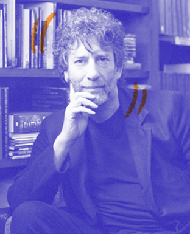
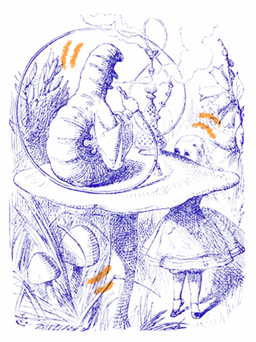

Je suis venu ici ce soir donner une conférence sous les auspices de la Reading Agency : une organisation humanitaire qui a pour mission d’offrir à chacun les mêmes chances dans la vie en aidant les gens à devenir des lecteurs assurés et enthousiastes. Une organisation qui soutient des programmes d’alphabétisation, des bibliothèques et des individus, et qui encourage ouvertement et effrontément l’action de lire. Parce que, nous dit-elle, tout change, quand on lit. Et c’est de ces changements, de cette action de lire que je suis venu vous parler ce soir. Je voudrais parler de ce que la lecture accomplit. Dire à quoi elle sert. J’ai assisté un jour à New York à une conférence sur la construction de prisons privées une énorme industrie en développement, en Amérique. Cette industrie des prisons a besoin de planifier sa croissance future: de combien de cellules va-t-elle avoir besoin? Combien de détenus y aura-t-il dans quinze ans? Et ils ont découvert qu’on pouvait le prédire très facilement, en utilisant un algorithme assez simple, basé sur la recherche du pourcentage d’enfants de dix et onze ans qui ne savaient pas lire. Et qui, à coup sûr, ne lisaient pas pour le plaisir.
Il est important que les gens précisent dans quel camp ils se rangent et pourquoi, et s’ils pourraient être de parti pris. Une déclaration d’intérêts de la part des membres, en quelque sorte. Donc, je vais vous parler de lecture. Je vais vous dire que les bibliothèques sont importantes. Je vais suggérer que lire de la fiction, lire pour le plaisir, est une des plus importantes activités à laquelle on puisse s’adonner. Je vais lancer un appel passionné pour que les gens comprennent ce que sont les bibliothèques et les bibliothécaires, et qu’il faut les préserver. Je suis de parti pris, de façon évidente et gigantesque: je suis auteur, souvent auteur de fiction. J’écris pour les enfants et les adultes. Depuis une trentaine d’années, je gagne ma vie par mes mots, en majorité en inventant des choses et en les écrivant. Il est évidemment de mon intérêt que les gens lisent, qu’ils lisent de la fiction, que bibliothèques et bibliothécaires continuent à exister et aident à favoriser l’amour de la lecture et des lieux où la lecture peut se pratiquer. Donc, en tant qu’auteur, je suis partial. Mais je suis beaucoup plus partial en tant que lecteur. Et plus encore en tant que citoyen britannique.
"Ce n’est pas un rapport absolu: on ne peut pas affirmer qu’une société instruite n’a aucune criminalité. Mais il y a de très réelles corrélations. "
"Et je crois que certaines de ces corrélations, les plus élémentaires, découlent d’un fait très simple. Les gens instruits lisent de la fiction."

La fiction a deux rôles. D’abord, c’est une drogue d’appel vers la lecture. Le besoin de savoir ce qui se passe ensuite, de vouloir tourner la page, le besoin de continuer, même si c’est dur, parce que quelqu’un a des problèmes et qu’il faut que vous sachiez comment tout cela va tourner… …c’est une pulsion très forte. Et cela vous force à apprendre des mots nouveaux, à formuler des pensées nouvelles, à persévérer. À découvrir que lire est en soi un plaisir. Une fois qu’on apprend ça, on est en bonne voie pour tout lire. Et lire, c’est la clé. Le bruit a couru brièvement, il y a quelques années, que nous vivions dans un monde post-alphabétisé, dans lequel la capacité à tirer un sens des mots écrits était en quelque sorte dépassée, mais cette époque est révolue ; les mots sont plus importants que jamais: nous naviguons dans le monde avec les mots et, au fur et à mesure que le monde bascule vers le Web, nous avons besoin de le suivre, de communiquer et d’appréhender ce que nous lisons. Les gens qui ne peuvent pas se comprendre entre eux ne peuvent pas échanger d’idées, ne peuvent pas communiquer, et les logiciels de traduction ont leurs limites. Nous avons besoin que nos enfants posent un pied sur l’échelle de la lecture: tout ce qu’ils aimeront lire les fera progresser vers le haut, un échelon après l’autre, vers l’instruction. (Ne faites pas non plus comme l’auteur ici présent, lorsque sa fille de onze ans était fan de R. L. Stine, c’est-à-dire aller lui chercher un exemplaire du Carrie de Stephen King, en lui expliquant que, si elle avait aimé ceux-là, elle allait adorer celui-ci! Pendant le reste de son adolescence, Holly n’a plus jamais lu que de paisibles histoires de colons dans les prairies, et elle me foudroie encore du regard chaque fois qu’on mentionne le nom de Stephen King.)
La façon la plus simple de s’assurer que nous élevons des enfants instruits est de leur apprendre à lire et de leur montrer que la lecture est une activité agréable. Et cela signifie, à la base, trouver des livres qui leur plaisent, leur donner accès à ces livres et les laisser les lire. Je ne crois pas qu’il existe de mauvais livre pour enfants. De temps en temps, la mode pousse des adultes à désigner une catégorie de livres pour enfants, un genre, peut-être, ou un auteur, et à déclarer que ce sont de mauvais livres, des livres qu’il faudrait empêcher les enfants de lire. J’ai vu ça se produire mainte et mainte fois ; on a déclaré qu’Enid Blyton était un mauvais auteur, R. L. Stine et des dizaines d’autres. On a reproché aux bandes dessinées de propager l’illettrisme. C’est du pipeau. C’est du snobisme et de la sottise.
Il n’y a pas de mauvais auteurs pour enfants, des auteurs qui leurs plaisent, qu’ils veulent lire, qu’ils recherchent, parce que chaque enfant est différent. Les enfants savent trouver les histoires qu’ils ont besoin de trouver. Et c’est eux-mêmes qu’ils amènent aux histoires. Une idée éculée et désuète n’est pas pour eux éculée et désuète. C’est la première fois que l’enfant la rencontre. Ne découragez pas les enfants de lire parce que vous estimez qu’ils ne lisent pas ce qu’il faudrait. Une fiction qui vous déplaît sera la drogue d’appel vers d’autres livres, que vous préférerez peut-être. Et tout le monde n’a pas les mêmes goûts que vous. Un adulte bien intentionné peu facilement détruire l’amour de la lecture chez un enfant : empêchez-le de lire ce qui lui plaît, ou donnez-lui des livres valables mais ennuyeux qui vous plaisent à vous, les équivalents XXIe siècle de la littérature «édifiante» victorienne. Vous vous retrouverez avec une génération convaincue que lire n’est pas cool et, ce qui est pire, pas agréable.
"RIEN N’OBLIGE LE MONDE À ÊTRE TEL QU’IL EST. LES CHOSES PEUVENT ÊTRE DIFFÉRENTES."
Deuxième rôle de la fiction, elle développe l’empathie. Quand vous regardez la télé ou un film, vous voyez des choses qui arrivent à d’autres gens. La fiction en prose est une construction que vous bâtissez à partir de vingt-six lettres et d’une poignée de signes de ponctuation; vous et vous seul, en utilisant votre imagination, vous créez un monde, vous le peuplez et vous voyez par d’autres yeux. Vous avez l’occasion d’éprouver des choses, de visiter des lieux et des mondes que vous ne connaîtriez jamais autrement. Vous apprenez que tous les gens autour de vous sont des moi, eux aussi. Vous êtes quelqu’un d’autre et, lorsque vous regagnez votre propre monde, vous allez en être légèrement changé. L’empathie est un outil qui construit des groupes à partir de gens, afin de nous permettre de fonctionner comme plus que de simples individus préoccupés d’eux-mêmes. En lisant, on découvre également quelque chose d’une importance vitale pour se faire un chemin dans le monde. Et c’est cela : rien n'oblige le monde à être tel qu'il est. Les choses peuvent être différentes. Je me trouvais en Chine, en 2007, lors de la première convention de Science-fiction et de Fantasy de l’histoire chinoise à être approuvée par le Parti. Et, à un moment, j’ai pris à part un officiel de haut rang, et je lui ai demandé : «Pourquoi?» La SF faisait depuis longtemps l’objet d’une désapprobation. Qu’est-ce qui avait changé ? «C’est simple», m’a-t-il répondu. Les Chinois excellaient à créer des choses si d’autres leur en apportaient les plans. Mais ils n’innovaient pas, ils n’inventaient pas. Ils n’imaginaient pas. Aussi ont-ils envoyé une délégation aux USA, chez Apple, Microsoft, Google, et ils ont posé là-bas aux gens qui inventaient le futur des questions sur eux-mêmes. Et ils ont découvert que tous avaient lu de la science-fiction quand ils étaient enfants. La fiction peut vous présenter un monde différent. Elle peut vous emmener où vous n’avez jamais été. Une fois que vous aurez visité d’autres mondes, comme les gens qui ont goûté aux fruits du pays des Fées, vous ne vous satisferez plus entièrement du monde dans lequel vous avez grandi. Le mécontentement est une bonne chose : des gens mécontents peuvent modifier et améliorer leur monde, le laisser meilleur, le laisser différent.